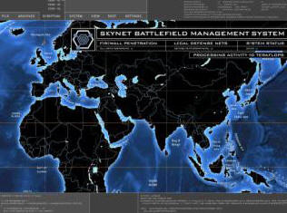
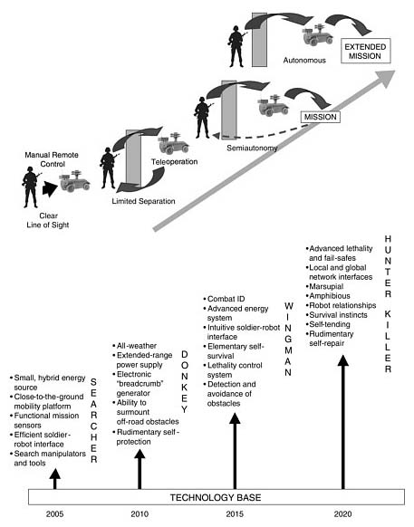
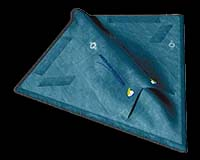
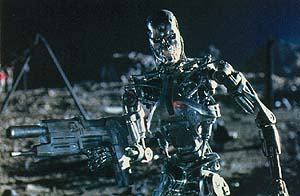
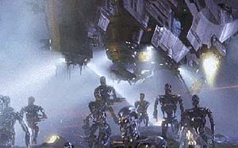
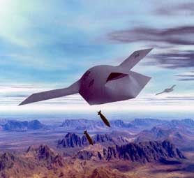

|
It shall be a goal of the Armed Forces to achieve the fielding of unmanned, remotely controlled technology such that—by 2010, one-third of the aircraft in the operational deep strike force aircraft fleet are unmanned; and by 2015, one-third of the operational ground combat vehicles are unmanned.
—National Defense Authorization Act for Fiscal Year 2001 H.R.4205, Sec. 220.
|

|
|
3.3. Networked Manned and Unmanned Systems
DARPA is working with the Army, Navy, and Air Force toward a vision of filling the battlespace with unmanned systems that are networked with manned systems. The idea is not simply to replace people with machines, but to team people with robots to create a more capable, agile, and cost-effective force that lowers the risk of U.S. casualties. The recent use of UAVs in Afghanistan has just begun to demonstrate the potential of this idea.
|
Novelty
America has an addictive need for the
military-industrial complex to keep churning on. Societies that get into such an economic bind—one thinks of
the Confederacy's dependency on slavery, South Africa's on apartheid, the
British empire's on colonialism—generally break free in one of two ways. Neither, as it turns out, is economic. Either internal pressures build up to the point of explosive violence (revolution in Czarist Russia, the Civil War here), or the society confronts its own immorality and decides to change (South Africa, the Soviet bloc under Gorbachev).
Which will be the path the U.S. takes?—
The Absurdity of Peace
- 2007
- 2006
- 2005
- 2004
- 2003
- 2002
- 2001
- 1998
|
TABLE 2-1 UGV Capability Classes, Example Systems, and Potential Mission Function Applications
|
|
Example System
|
Capability Class
|
Other Possible Applications
|
|
Small robotic building and tunnel searcher (“Searcher”)
|
Teleoperated ground vehicle
|
Mine detection, mine clearing, engineer construction, EOD/UXO, materials handling, soldier-portable reconnaissance/surveillance
|
|
Small-unit logistics mover (“Donkey”)
|
Semiautonomous preceder/follower
|
Supply convoy, medical evacuation, smoke laying, indirect fire, reconnaissance/surveillance, physical security
|
|
Unmanned wingman ground vehicle (“Wingman”)
|
Platform-centric autonomous ground vehicle
|
Remote sensor, counter-sniper, counter-reconnaissance/infiltration, indirect fire, single outpost/scout, chemical/biological agent detection, battle damage assessment
|
|
Autonomous hunter-killer team (“Hunter-Killer”)
|
Network-centric autonomous ground vehicle
|
Deep RSTA, combined arms (lethal direct fire/reconnaissance/indirect fire for small unit defense or offense), static area defense, MOUT reconnaissance
|
- The Searcher will be a small, portable reconnaissance robot designed to explore buildings, tunnels and caves for mines, bombs and hostile humans. It will be able to climb stairs, open doors and detonate booby traps. It should be operational in two to seven years.
- The Donkey, also dubbed the Mule, will be a one-ton unmanned supply vehicle that can accompany advancing troops, carrying 1,000 pounds of ammunition, food and other equipment. On the return trip, it could carry casualties. The Donkey would follow a path of "electronic bread crumbs" previously marked by humans. Preliminary versions are undergoing field tests, and the system is supposed to be operational in five or six years.
- The Wingman would be a 6-ton, semi-autonomous reconnaissance vehicle, armed with guns and missiles that would accompany and support manned, mechanized units. Under the direction of a human, it could scout a battlefield, enter extremely dangerous areas and fire at hostile forces. "Through its sophisticated sensor package, the Wingman would provide eyes and ears to the section leader," the NAS report said. "The Wingman would be able to perform continuous local security while soldiers slept or were otherwise occupied." Target date for completion is 2015.
- The Hunter-Killer, the most challenging system proposed, would be a team of about 10 unmanned vehicles connected by a wireless network. The team would be programmed to travel up to 90 miles and set up an ambush of hostile forces. Each Hunter-Killer vehicle would carry in its belly, like a kangaroo, up to five small observation vehicles to detect approaching foes. When an enemy is identified, a human officer would radio the team to attack. Such a system would not be ready until 2025, at the earliest.
During a two-day seminar on the Objective Force and FCS in November 2001, the Army defined threshold-level capabilities for the FCS (TRADOC, 2001a,b) to include:

- Manned and unmanned ground, air, and space means to extend vision beyond line of sight to gain timely combat information through passive and aggressive RSTA (reconnaissance, surveillance, and target acquisition) networked into an integrated common operational picture (COP) for unprecedented situational awareness and understanding.
- Integrated synergistic use of joint and Army manned and unmanned, air and ground RSTA to gain and maintain contact with enemy elements and to provide high-resolution combat information on terrain and weather.
- Robots to perform manpower intensive, high-risk functions, such as RSTA missions in urban operations (inside buildings and the subterranean dimension) and reconnaissance/reduction of minefields.
- Revolutionary means of transporting and sustaining people and materiel to leverage new ground and aerial concepts for delivery, including manned and unmanned systems.
- Mule-like robotic capability to perform a variety of sustainment/replenishment functions on a highly agile, light but survivable platform to include:
- carrying dismounted soldier loads
- operating in terrain requiring dismounted operations
- performing non-standard Casualty Evacuation and other services, such as battery recharging
- delivering classes of supply from battalion through company to the soldier to include resupply of ammunition
- performing combat tasks such as reconnaissance of high-risk areas.
The use of unmanned aerial vehicles in the current war in Afghanistan is a prime example of user confidence in unmanned systems. The use of UAVs in military operations has been studied and tested for over 40 years. Over the last 20 years the use of UAVs in niche roles (predominantly reconnaissance) has driven the development of systems as well as requirements. The recent successful demonstration of UAVs in a lethal role in a combat situation has given the user the confidence necessary to push future development of the technology. This same level of confidence must be developed in the ability of unmanned ground vehicles in order for a leap-ahead to occur.—[1]
In April 2002, as one of its first actions the LSI for FCS requested industry proposals for 43 different technologies for FCS, including three UGV systems:
- Soldier UGV—a small soldier-portable reconnaissance and surveillance robot
- Mule UGV—a 1-ton vehicle suitable for an RSTA or transport/supply mission
- Armed Reconnaissance Vehicle (ARV) UGV—a 6-ton vehicle to perform the RSTA mission, as well as a fire mission, carrying a turret with missile and gun systems.
Each of the four classes (teleoperated, semiautonomous, platform-centric autonomous, and network-centric autonomous) varies in its need for different UGV technologies. For example, the dependence on technology in the communications area varies as follows:—[2]
- Teleoperated ground vehicle (TGV): high requirement at all times
- Semiautonomous preceder/follower (SAP/F-UGV): mostly moderate requirement (placing “breadcrumbs”), except when it moves off course or when a crisis situation (e.g., minefield, enemy attack) arises
- Platform-centric autonomous ground vehicle (PC-AGV): little need for human control, minimal connectivity requirements while executing its mission
- Network-centric autonomous ground vehicle (NC-AGV): little need for human control, high need for network connectivity.
|
The US Air Force is reported to be examining the feasibility of a nuclear-powered version of an unmanned aircraft. The revelations come in the latest issue of New Scientist published Feb 22. According to the report, 'The USAF hopes that such a vehicle will be able to "loiter" in the air for months without refuelling, striking at will when a target comes into its sights."—[3]
|

|

- Mobility
- Operate day and night under all weather conditions
- Operate in all rural and urban terrains
- Swim across slowly flowing rivers and other bodies of water without additional preparation
- Move and perform missions without active human intervention over a round-trip distance of at least 300 km
- Move at variable speeds depending on the situation but up to at least 120 km/h on roads
- Remain in position for at least 30 days without human intervention
- Mission packages
- Local and global terrain, vegetation, obstacle sensing
- Highly sophisticated sensors and range finders
- Highly sophisticated ATR that can discriminate among vehicles (combat and commercial) and humans (friend, foe, and noncombatant)
- Sensors able to read detailed terrain, vegetation, obstacle, and other data that can be downloaded upon command to update global databases
- Stealth capabilities that make enemy detection of any UGV very difficult
- Precisely targetable, highly lethal kill systems; “one shot, one-kill”
- Lethal self-protection package

- Communications
- Secure local area network allows all UGVs to pass information among themselves
- Secure wide area network allows team to call for backup support and to communicate with base station as well as other networked systems, both manned and unmanned.
- Human control
- Program various movement, communications, intelligence, rules of engagement, decision making, and other initial inputs
- Monitor communications from UGV team for programmed reports or situations requiring human guidance
- Override in case of changes in situation

- Automated UGV self-control and decision making
- Automatic “intelligent” decision making based on programmed human instructions augmented or modified with real-time UGV sensing of the situation
- Fully automated movement; capable of moving as a team or infiltrating separately
- Killers able to launch hunters to gather intelligence on terrain, vegetation, obstacles, or human activity
- Upon arrival at a mission location all UGVs able to close down all energy dependent systems except for the most energy efficient; capable of “waking up” other systems as the situation warrants
- Only attacks enemy forces that are within its ability to devastatingly destroy; otherwise, follows programmed decision rules
- Understands enemy tactics and reacts to enemy actions with coordinated UGV tactics, as necessary
- Other
- Minimum size of one team is 10 medium-sized “killer” UGVs that each internally (in a marsupial fashion) carries up to 5 small hunter/observer ground or aerial UGVs
- Very high level of maintenance reliability; self-diagnosis and repair of maintenance problems
- Human support
- Control is by on-duty staff officer at appropriate headquarters
- Maintenance beyond scope of UGV and other programming requirements performed by a small team of humans (no more that 10) to support up to five Hunter-Killer teams (approximately 50 killers and 250 hunters)